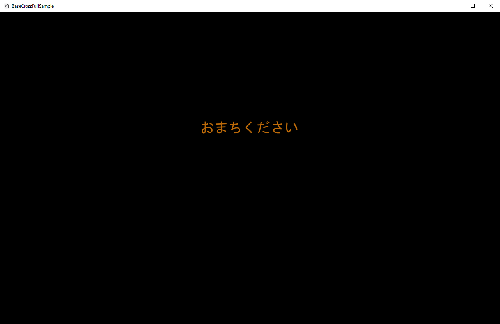
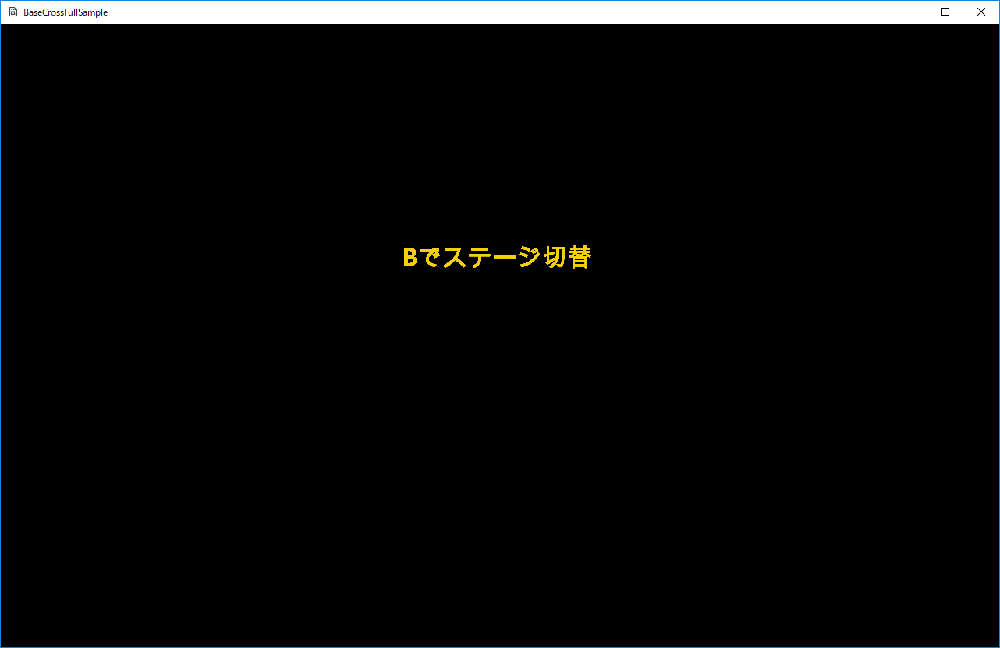
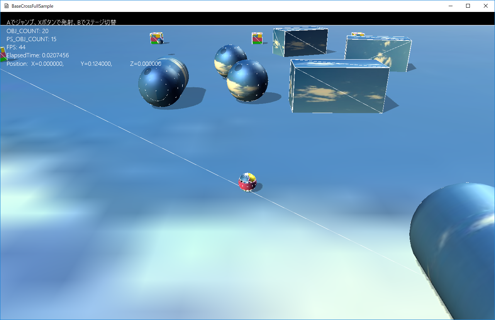

図0705a
この画面がリソースのロード中の画面です。デバッグモードで実行すれば、比較的長い時間表示されます。リリースモードの場合は、一瞬、場合によってはほとんど表示されずに次の画面に映ります。
//--------------------------------------------------------------------------------------
/// ゲームシーン
//--------------------------------------------------------------------------------------
class Scene : public SceneBase {
//中略
public:
//中略
//--------------------------------------------------------------------------------------
/*!
@brief 初期化
@return なし
*/
//--------------------------------------------------------------------------------------
virtual void OnCreate() override;
//--------------------------------------------------------------------------------------
/*!
@brief イベント取得
@return なし
*/
//--------------------------------------------------------------------------------------
virtual void OnEvent(const shared_ptr<Event>& event) override;
};
void Scene::OnCreate() {
try {
//自分自身にイベントを送る
//これにより各ステージやオブジェクトがCreate時にシーンにアクセスできる
PostEvent(0.0f, GetThis<ObjectInterface>(), GetThis<Scene>(), L"ToWaitStage");
}
catch (...) {
throw;
}
}
void Scene::OnEvent(const shared_ptr<Event>& event) {
if (event->m_MsgStr == L"ToWaitStage") {
//リソース読み込み用のステージ
ResetActiveStage<WaitStage>();
}
else if (event->m_MsgStr == L"ToTitleStage") {
ResetActiveStage<TitleStage>();
}
else if (event->m_MsgStr == L"ToGameStage") {
ResetActiveStage<GameStage>();
}
}
class WaitStage : public Stage {
//ビューの作成
void CreateViewLight();
//スプライトの作成
void CreateTitleSprite();
//リソースロード用のスレッド（スタティック関数）
static void LoadResourceFunc();
//リソースを読み込んだことを知らせるフラグ（スタティック変数）
static bool m_Loaded;
public:
//構築と破棄
WaitStage() :Stage() {}
virtual ~WaitStage() {}
//初期化
virtual void OnCreate()override;
//更新
virtual void OnUpdate()override;
};
bool WaitStage::m_Loaded = false; //リソースロード用のスレッド（スタティック関数） void WaitStage::LoadResourceFunc() { mutex m; m.lock(); m_Loaded = false; m.unlock(); wstring DataDir; //サンプルのためアセットディレクトリを取得 App::GetApp()->GetAssetsDirectory(DataDir); //各ゲームは以下のようにデータディレクトリを取得すべき //App::GetApp()->GetDataDirectory(DataDir); wstring strTexture = DataDir + L"sky.jpg"; App::GetApp()->RegisterTexture(L"SKY_TX", strTexture); strTexture = DataDir + L"trace.png"; App::GetApp()->RegisterTexture(L"TRACE_TX", strTexture); strTexture = DataDir + L"spark.png"; App::GetApp()->RegisterTexture(L"SPARK_TX", strTexture); strTexture = DataDir + L"StageMessage.png"; App::GetApp()->RegisterTexture(L"MESSAGE_TX", strTexture); //サウンド wstring CursorWav = DataDir + L"cursor.wav"; App::GetApp()->RegisterWav(L"cursor", CursorWav); //BGM wstring strMusic = DataDir + L"nanika .wav"; App::GetApp()->RegisterWav(L"Nanika", strMusic); m.lock(); m_Loaded = true; m.unlock(); } //中略 //初期化 void WaitStage::OnCreate() { wstring DataDir; //サンプルのためアセットディレクトリを取得 App::GetApp()->GetAssetsDirectory(DataDir); //お待ちくださいのテクスチャのみここで登録 wstring strTexture = DataDir + L"wait.png"; App::GetApp()->RegisterTexture(L"WAIT_TX", strTexture); //他のリソースを読み込むスレッドのスタート std::thread LoadThread(LoadResourceFunc); //終了までは待たない LoadThread.detach(); CreateViewLight(); //スプライトの作成 CreateTitleSprite(); } //更新 void WaitStage::OnUpdate() { if (m_Loaded) { //リソースのロードが終了したらタイトルステージに移行 PostEvent(0.0f, GetThis<ObjectInterface>(), App::GetApp()->GetScene<Scene>(), L"ToTitleStage"); } }

図0705b
これがタイトルステージです。
//更新
void TitleStage::OnUpdate() {
//コントローラの取得
auto CntlVec = App::GetApp()->GetInputDevice().GetControlerVec();
if (CntlVec[0].bConnected) {
//Bボタン
if (CntlVec[0].wPressedButtons & XINPUT_GAMEPAD_B) {
PostEvent(0.0f, GetThis<ObjectInterface>(),
App::GetApp()->GetScene<Scene>(), L"ToGameStage");
}
}
}

図0705c
ステージに入ると上から物理オブジェクトが落下してきます。
void ActivePsSphere::OnCreate() {
//中略
//衝突判定をつける
auto PtrCol = AddComponent<CollisionSphere>();
//衝突判定はNoneにする
PtrCol->SetIsHitAction(IsHitAction::None);
//中略
//物理計算球体
PsSphereParam param;
//DEFAULT_SPHEREのスケーリングは直径基準なので、半径にする
param.m_Radius = m_Scale * 0.5f;
param.m_Mass = 1.0f;
//慣性テンソルの計算
param.m_Inertia = BasePhysics::CalcInertiaSphere(param.m_Radius, param.m_Mass);
param.m_MotionType = PsMotionType::MotionTypeActive;
param.m_Quat = m_Qt;
param.m_Pos = m_Position;
auto PsPtr = AddComponent<PsSphereBody>(param);
PsPtr->SetDrawActive(true);
}
//初期化
void Player::OnCreate() {
//中略
//衝突判定をつける
auto PtrCol = AddComponent<CollisionSphere>();
//判定するだけなのでアクションはNone
PtrCol->SetIsHitAction(IsHitAction::None);
PsSphereParam param;
//basecrossのスケーリングは直径基準なので、半径基準にする
param.m_Radius = m_Scale * 0.5f;
param.m_Mass = 1.0f;
//慣性テンソルの計算
param.m_Inertia = BasePhysics::CalcInertiaSphere(param.m_Radius, param.m_Mass);
//プレイヤーなのでスリープしない
param.m_UseSleep = false;
param.m_MotionType = PsMotionType::MotionTypeActive;
param.m_Quat.identity();
param.m_Pos = m_StartPos;
param.m_LinearVelocity = Vec3(0);
auto PsPtr = AddComponent<PsSphereBody>(param);
PsPtr->SetAutoTransform(false);
PsPtr->SetDrawActive(true);
//中略
}
void Player::OnPushX() {
auto XAPtr = App::GetApp()->GetXAudio2Manager();
XAPtr->Start(L"cursor");
auto Ptr = GetComponent<Transform>();
Vec3 Pos = Ptr->GetPosition();
Pos.y += 0.3f;
Quat Qt = Ptr->GetQuaternion();
Vec3 Rot = Qt.toRotVec();
float RotY = Rot.y;
Vec3 velo(sin(RotY), 0.05f, cos(RotY));
velo.normalize();
velo *= 20.0f;
auto Group = GetStage()->GetSharedObjectGroup(L"ShellGroup");
for (size_t i = 0; i < Group->size(); i++) {
auto shptr = dynamic_pointer_cast<ShellSphere>(Group->at(i));
if (shptr && !shptr->IsUpdateActive()) {
//空きが見つかった
shptr->Reset(Pos, velo);
return;
}
}
//ここまで来てれば空きがない
GetStage()->AddGameObject<ShellSphere>(Pos, velo);
}
void Box::OnCreate() {
//中略
//衝突判定をつける
auto PtrCol = AddComponent<CollisionObb>();
//衝突判定はNoneにする
PtrCol->SetIsHitAction(IsHitAction::None);
//中略
//物理計算ボックス
PsBoxParam param;
//DEFAULT_CUBEのスケーリングは各辺基準なので、ハーフサイズにする
param.m_HalfSize = Vec3(0.5f, 0.5f, 0.5f) * 0.5f;
param.m_Mass = 1.0f;
//慣性テンソルの計算
param.m_Inertia = BasePhysics::CalcInertiaBox(param.m_HalfSize, param.m_Mass);
param.m_MotionType = PsMotionType::MotionTypeActive;
param.m_Quat = Qt;
param.m_Pos = m_StartPos;
auto PsPtr = AddComponent<PsBoxBody>(param);
PsPtr->SetDrawActive(true);
//ステートマシンの構築
m_StateMachine.reset(new StateMachine<Box>(GetThis<Box>()));
//最初のステートをSeekFarStateに設定
m_StateMachine->ChangeState(BoxDefaultState::Instance());
}
void ShellSphere::OnCreate() {
//中略
//Rigidbodyをつける
auto PtrRedid = AddComponent<Rigidbody>();
PtrRedid->SetVelocity(m_Velocity);
//衝突判定をつける
auto PtrCol = AddComponent<CollisionSphere>();
PtrCol->SetIsHitAction(IsHitAction::None);
//中略
}
void ShellSphere::OnUpdate2() {
auto PtrTransform = GetComponent<Transform>();
if (PtrTransform->GetPosition().y < -0.5f) {
Erase();
return;
}
auto PtrSpark = GetStage()->GetSharedGameObject<MultiSpark>(L"MultiSpark", false);
if (GetComponent<Collision>()->GetHitObjectVec().size() > 0) {
for (auto& v : GetComponent<Collision>()->GetHitObjectVec()) {
auto& ptr = dynamic_pointer_cast<Box>(v);
auto& ptr2 = dynamic_pointer_cast<Player>(v);
auto& ptr3 = dynamic_pointer_cast<ActivePsObject>(v);
if (ptr || ptr2) {
if (ptr) {
GetStage()->RemoveGameObject<Box>(ptr);
}
else {
//ここにプレイヤーのダメージを記述
}
//スパークの放出
if (PtrSpark) {
PtrSpark->InsertSpark(GetComponent<Transform>()->GetPosition());
}
}
else if (ptr3) {
//スパークの放出
if (PtrSpark) {
PtrSpark->InsertSpark(GetComponent<Transform>()->GetPosition());
}
Erase();
}
}
}
}